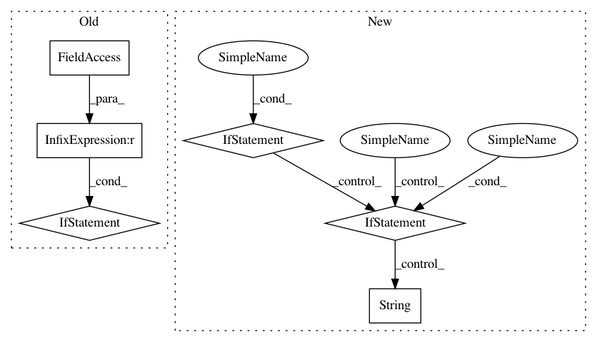

ddca7f56ce7a154c2284d6464cf872a1f4992f3d,skopt/optimizer/optimizer.py,Optimizer,__init__,#Optimizer#,154
Before Change
self._initial_point_generator = cook_initial_point_generator(
initial_point_generator)
if self._initial_point_generator is not None:
transformer = self.space.get_transformer()
self._initial_samples = self._initial_point_generator.generate(
self.space.dimensions, n_initial_points,
random_state=self.rng.randint(0, np.iinfo(np.int32).max))
self.space.set_transformer(transformer)
// record categorical and non-categorical indices
self._cat_inds = []
self._non_cat_inds = []
for ind, dim in enumerate(self.space.dimensions):
if isinstance(dim, Categorical):
After Change
self.init_point_gen_kwargs = init_point_gen_kwargs
if initial_point_generator != "random" and \
isinstance(initial_point_generator, str):
if initial_point_generator == "sobol":
self._initial_point_generator = Sobol(
**self.init_point_gen_kwargs)
elif initial_point_generator == "halton":
self._initial_point_generator = Halton(
**self.init_point_gen_kwargs)
elif initial_point_generator == "hammersly":
self._initial_point_generator = Hammersly(
**self.init_point_gen_kwargs)
elif initial_point_generator == "lhs":
self._initial_point_generator = Lhs(
**self.init_point_gen_kwargs)
else:
raise ValueError(
"Unkown initial_point_generator: " +
str(initial_point_generator)
)
transformer = self.space.get_transformer()
self._initial_samples = self._initial_point_generator.generate(
self.space.dimensions, n_initial_points,
random_state=self.rng.randint(0, np.iinfo(np.int32).max))
In pattern: SUPERPATTERN
Frequency: 3
Non-data size: 6
Instances
Project Name: scikit-optimize/scikit-optimize
Commit Name: ddca7f56ce7a154c2284d6464cf872a1f4992f3d
Time: 2020-02-20
Author: holgernahrstaedt@gmx.de
File Name: skopt/optimizer/optimizer.py
Class Name: Optimizer
Method Name: __init__
Project Name: Esri/raster-functions
Commit Name: 6b642c8e0fa07c971a89e4fb70bdf539b04042cc
Time: 2015-05-25
Author: rsumbaly@esri.com
File Name: functions/KeyMetadata.py
Class Name: KeyMetadata
Method Name: updateKeyMetadata
Project Name: cesium-ml/cesium
Commit Name: e547a82c24b37c157bc9b40d2724a7b1fd0a7b0f
Time: 2017-04-17
Author: brettnaul@gmail.com
File Name: cesium/featurize.py
Class Name:
Method Name: save_featureset